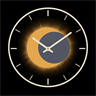

Cronometro de eclipse

Eclipse total
12 agosto 2026
Ubicacion
Usar mi ubicacion
Usar León
Latitud
N
Longitud
O
Altitud (m)
Estado
sin datos
Automatica o manual.
Actualizar calculo
Estado actual
-
0%
obscuracion
-
Cuenta atras
proximo contacto
--:--:--
-
Pantalla completa
Contactos (CEST)
Avisos de observacion y fotografia
Observacion
Activa o desactiva avisos de voz por fenomeno.
Llegada de la umbra
C2 - 60s
Bandas de sombra (entrada)
C2 - 25s
Brillo 360° del horizonte
C2 + 5s
Temperatura y comportamiento animal
Mitad de la totalidad
Bandas de sombra (salida)
C3 + 10s
Se pueden quitar gafas/filtro
C2
Volver a poner gafas/filtro
C3 + 15s
Recomendacion de seguridad visual sincronizada con C2 y C3.
Fotografia activa
Fotografia
C2 - 40s
Mano al filtro
C2 - 5..1
Cuenta atras para quitar filtro
C3 + 10..14
Cuenta atras para volver a poner filtro
C3 + 15s
Pon el filtro ahora
Modo de prueba
Voz
Probar voz
Anunciar cada contacto al ocurrir
Prueba rapida
Iniciar prueba
Salir
Inactivo.
Cerrar
Salir